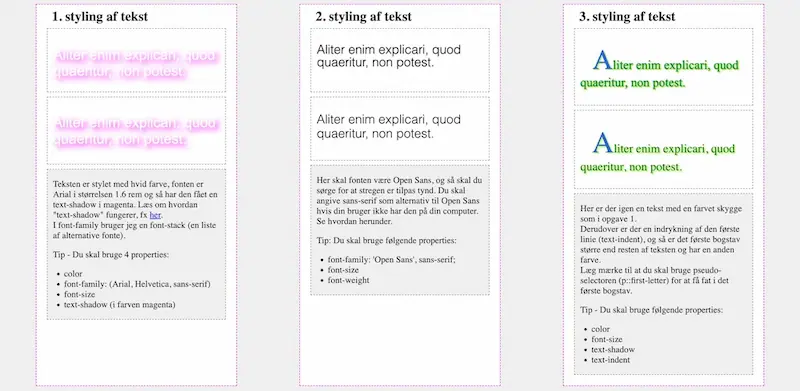

Tema - 2
Grundlæggende Web
Om tema 2
Tema 2 handlede om grundlæggende web, så primært en introduktion til html og css. Så skulle vi bruge det, vi havde lært, til vores studiestartsprøve, hvor vi skulle kode en hjemmeside med indhold der var blevet givet til os på forhånd.
Vi dykkede ned i brugen af grid til at style hjemmesider. Derudover lærte vi at gøre vores hjemmeside responsiv - altså at den ser godt ud både på mobilen og computeren - ved hjælp af mediaqueries. Vi blev også bekendte med nyttige værktøjer som Squoosh og Colourbox. Temaet introducerede os desuden til grundlæggende faglige begreber inden for design af digitale brugergrænseflader, digital indholdsproduktion, digital kommunikation og responsivt webdesign.
Færdigheder
- Github
- At anvende HTML
- At anvende CSS
- At bruge figma
- At anvende metoder til design af brugergrænseflader
- At anvende grid i HTML
Processen for 02.01.02 Website
Visitkort- og kæledyrsøvelse
I starten af forløbet lavede vi Visitkortøvelsen, hvor vi lærte at bruge Figma og skulle skabe en kort præsentation af os selv. Vores allerførste kode var oprettelsen af et website med en præsentation af os selv, hvor vi for første gang stiftede bekendtskab med HTML (Hypertext Markup Language). HTML er et standard markup-sprog, der bruges til at strukturere hjemmesider. Vi lærte at opbygge en simpel hjemmeside og tilføje tekst og billeder. Efterfølgende skulle vi at skabe en hjemmeside om et kæledyr for at styrke vores forståelse af HTML.
25 bokse øvelser og grid øvelser
Vi blev introduceret til CSS(Cascading Style Sheet), som er et style sheet sprog, som bruges til at style og lave layout til HTML. Her blev vi sat til at lave nogle css øvelser, som hed 25 bokse. Her lærte vi at style tekst, og sætte baggrund og farver på diverse tekster ved hjælpe af farver og fonte. Vi blev også sat direkte ind i nogle grid-øvelser, hvor jeg lærte at lave layout på en hjemmeside og bestemme hvor eksempelvis billederne skulle placeres.
Alle disse øvelser førte os til studiestartsprøven, hvor vi fik tildelt indhold i form af tekst og billeder til siderne. Vi skulle placere dem på en bestemt måde. Her lærte vi at kombinere HTML og CSS og faktisk udvikle en "rigtig" hjemmeside ved at style både struktur og stil.
25 Bokse
Visitkort website
Kæledyrsøvelse
Grid øvelser


HTML og css
Vi blev præsenteret for det mest grundlæggende HTML, hvor vi lærte om de simpleste HTML-tags som h1, p, img, osv. Samtidig lærte vi om til HTML-strukturen, hvor head er øverst, efterfulgt af body, der indeholder elementer som header, main og footer. Jo mere vi blev sat ind i det, desto mere lærte vi om grid og hvordan last child-elementer og first child-elementer fungerer.
First Child Element er det første element inde i eksempelvis en div, mens Last Child Element refererer til det sidste element i samme div. Dette bruges for at ramme specifikke elementer inden for en given div.
Vi fik også en introduktion til forskellen mellem flex og grid. Flex kan kun styles som enten en række eller en kolonne, mens grid styles i både kolonner og rækker samtidig.
Gestalt lovene
Gestalt lovene
Jeg fik en forståelse for gestalt lovene, som i vores sammenhæng bruges i design og brugergrænsefladedesign. Disse fem mest anvendte love inkluderer følgende:
- Lukning - Det refererer til den tendens mennesker har til at gruppere ting sammen der har samme farve, form eller størrelse.
- Nærhed - Som er ting der er ligger tæt sammen ofte opfattes som en gruppe, og egentlig det samme for ting der ligger langt fra hinanden.
- Lukning - Dette er hvis nogle objekter har en ufuldsstændighed, kan vores hjerne stadig sætte dem sammen til en helhed.
- Fælles skæbne - Dette betyder at vi opfatter ting som eksempelvis bevæger sig på samme måde, i samme gruppe.
- Fortsættelse - Vi opfatter ting som sammenhængende, hvis de for eksempel har ligger på samme række.